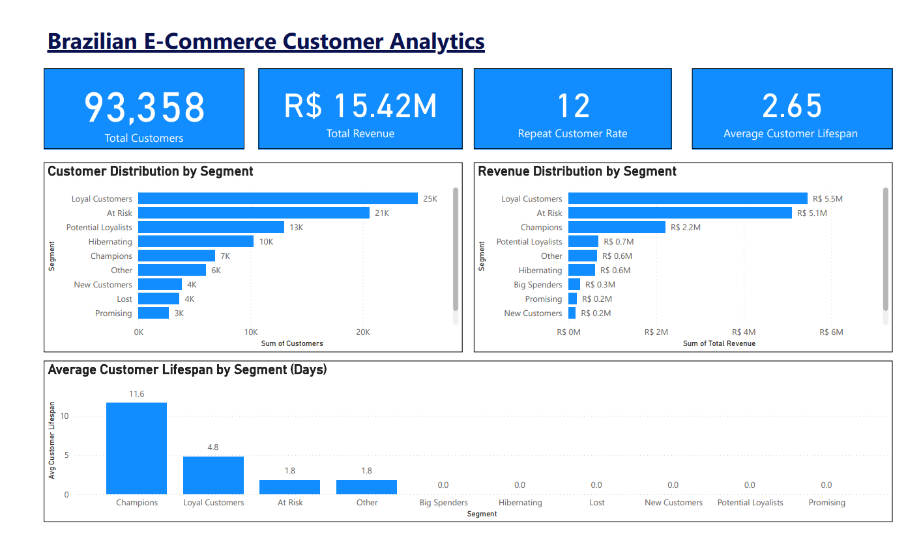
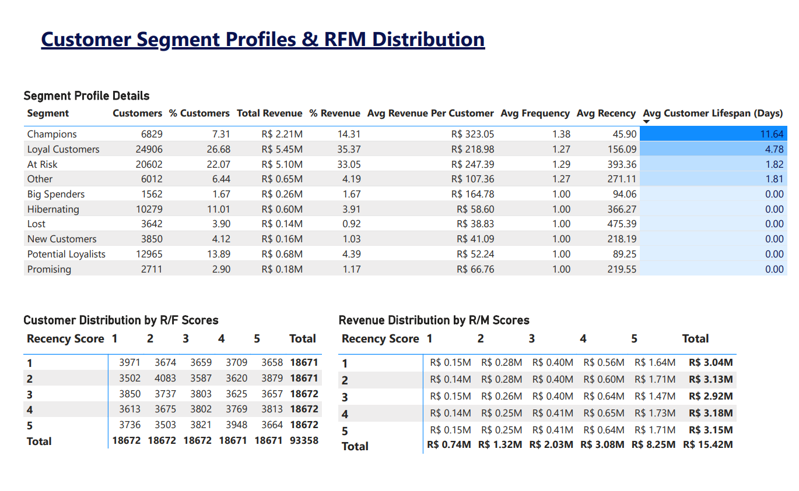
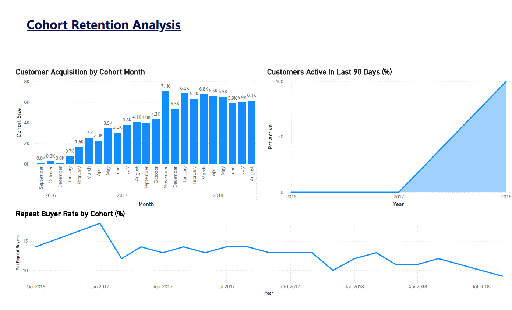

Challenge: A Brazilian e-commerce marketplace needed to understand customer behavior patterns to optimize their marketing strategy. With 93,358 customers and R$15.4M in revenue over two years, the business wanted to identify high-value segments and improve retention.
My Approach: I conducted comprehensive RFM (Recency, Frequency, Monetary) analysis using PostgreSQL and built an interactive Power BI dashboard to visualize customer segments, cohort retention patterns, and revenue distribution.
Critical Discovery: Customers have an average lifespan of just 2.65 days - they make burst purchases and disappear. This fundamentally changed the recommended strategy from building long-term loyalty programs to optimizing for short-window conversion.
1. Data Exploration & Cleaning (PostgreSQL)
- Loaded 9 CSV files (99,441 orders) into PostgreSQL database
- Performed data quality assessment across 8 related tables
- Identified and documented missing values, duplicates, and data anomalies
- Created master customer table with cleaned, aggregated metrics
2. RFM Analysis & Segmentation
- Calculated Recency (days since last purchase), Frequency (total orders), Monetary (total revenue) for each customer
- Applied NTILE(5) scoring to bucket customers into quintiles (1-5 scale)
- Created 10 customer segments: Champions, Loyal Customers, At Risk, Potential Loyalists, etc.
- Profiled each segment by size, revenue contribution, and behavioral metrics
3. Cohort Retention Analysis
- Tracked 24 monthly cohorts (Sept 2016 - Aug 2018) for retention patterns
- Calculated repeat buyer rates and customer activity over time
- Discovered declining retention: 14% (2016) → 9% (2018)
- Proved zero customers remain active after 90 days
4. Interactive Dashboard (Power BI)
- Built 3-page dashboard connecting directly to PostgreSQL database
- Created executive KPIs, segment profiles, and cohort heatmaps
- Applied conditional formatting to highlight key insights visually
Page 1: Executive Overview

Key Metrics at a Glance:
- 93,358 total customers analyzed
- R$15.42M total revenue generated
- 12% repeat customer rate (88% are one-time buyers)
- 2.65 days average customer lifespan - the critical insight
The side-by-side comparison of customer distribution vs. revenue distribution reveals that Loyal Customers (27% of base) drive 35% of revenue, while At Risk customers (22% of base) contribute 33% despite not purchasing recently.
Page 2: Segment Analysis

Detailed Segment Profiles:
- Champions (7.3%): R$323 average value, 11.64-day lifespan, most recent purchasers
- Loyal Customers (26.7%): 4.78-day lifespan, consistent repeat buyers, revenue engine
- At Risk (22.1%): 393 days since last purchase, historically valuable, major win-back opportunity
- RFM Score Matrices: Revenue heavily concentrated in high Monetary scores (M=5 drives 53% of revenue)
Page 3: Cohort Retention

The Retention Cliff:
- Business scaled from 0 to 7,000 customers/month (Nov 2017 peak)
- Repeat buyer rate declined from 14% → 9% (newer cohorts perform worse)
- Dramatic visualization: Zero customers active after 90 days - flat line at 0% until June 2018 cohorts (within window)
This chart proves the burst-activity model: customers purchase intensely for days, then vanish permanently.
1. Burst-Activity Business Model
No segment has meaningful long-term customer relationships. Even Champions average just 11.64 days of activity. This isn't a retention problem - it's the fundamental business model.
2. The Second Purchase Cliff
91.86% of repeat customers stop after exactly 2 orders. Only 8.14% progress to 3+ purchases. The critical conversion window is between orders 1 and 2.
3. Low Basket Sizes = Cross-Sell Opportunity
Average 1.05-1.35 items per order across all categories. Customers make multiple single-item orders rather than bundling purchases.
4. May, Not November, Drives Revenue
Seasonal analysis revealed May as the consistent peak month (likely Mother's Day in Brazil). November 2017 spike was event-driven (Black Friday), not structural.
5. Declining Retention Over Time
Newer customer cohorts have worse retention than older ones (14% → 9% repeat rate). The business is scaling but losing conversion effectiveness.
Strategic Recommendations
✅ Implement Immediately (High ROI)
- Aggressive retargeting within 5-10 days of first purchase
- Window of opportunity closes within days based on avg 2.65-day lifespan
- 91.86% won't return after order 2 - must convert during active window
- Time-limited offers creating urgency
- Matches natural burst behavior (customers active 2-12 days)
- Push for multiple orders during engagement window
- Heavy cross-selling in first week
- Current basket size: 1.05-1.35 items per order
- Bundle products, aggressive recommendations, multi-buy discounts
- Optimize May campaigns (not November)
- May consistently strongest month across all cohorts
- Focus annual marketing calendar accordingly
❌ Deprioritize (Low ROI)
- Long-term loyalty programs (customer lifespans too short to justify investment)
- Post-90-day win-back campaigns (zero historical success rate)
- Monthly subscription models (contradicts burst-purchase behavior)
⚠️ Exception: VIP Treatment for Champions
Top 2.6% of customers (Champions segment) with R$323 average order value warrant personalized outreach and early access to products.
Technical Skills Demonstrated
Data Analysis
- SQL (PostgreSQL)
- RFM Segmentation
- Cohort Analysis
- Customer Lifetime Value
- Statistical Analysis
Technical Execution
- Database Design & ETL
- Window Functions (NTILE, RANK)
- Complex Multi-Table JOINs
- Nested CTEs
- View & Table Creation
Visualization
- Power BI Desktop
- Interactive Dashboards
- Conditional Formatting
- DAX Measures
- Data Storytelling
Business Impact
- Strategic Recommendations
- ROI-Focused Analysis
- Executive Communication
- Marketing Optimization
- Data-Driven Decision Making